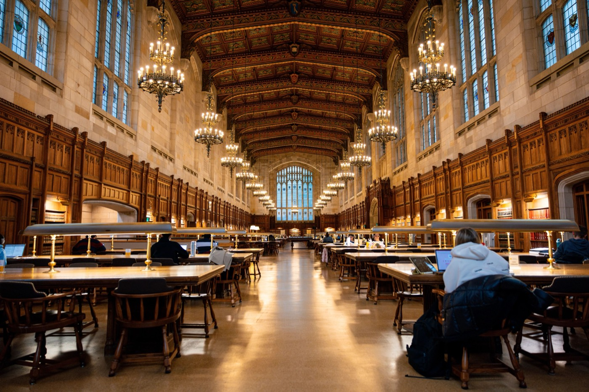
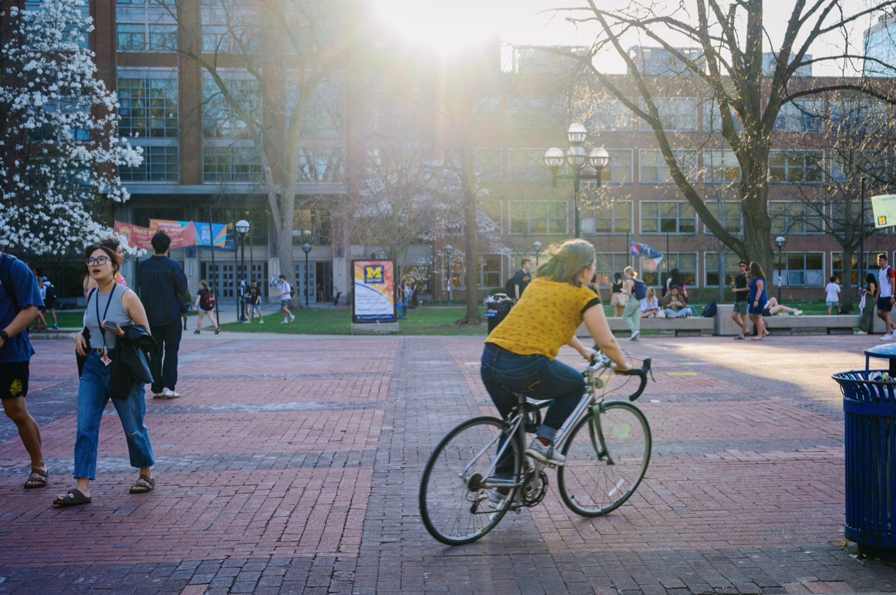
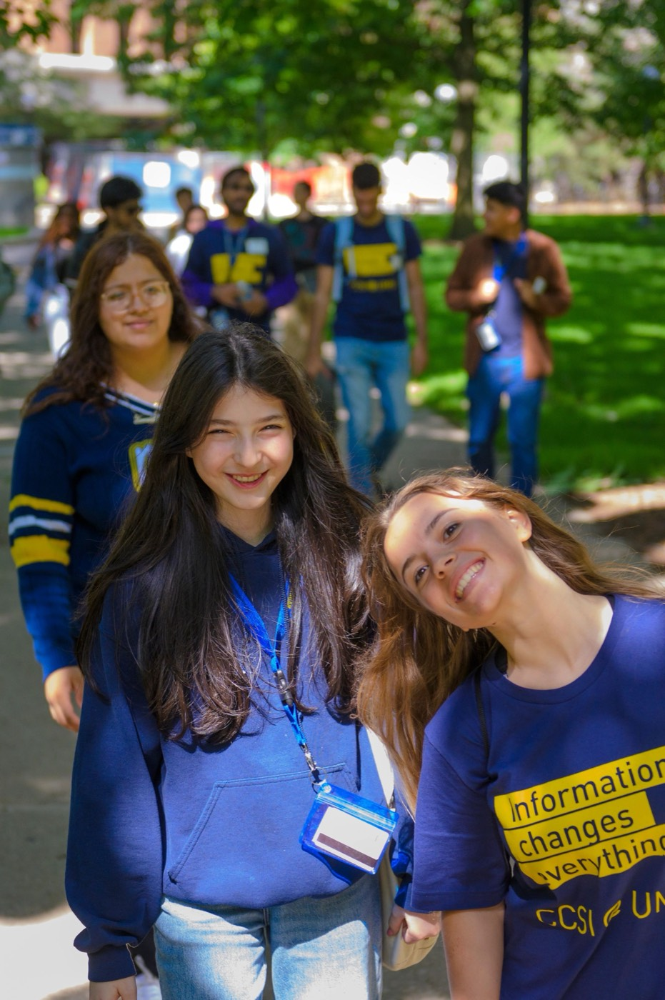
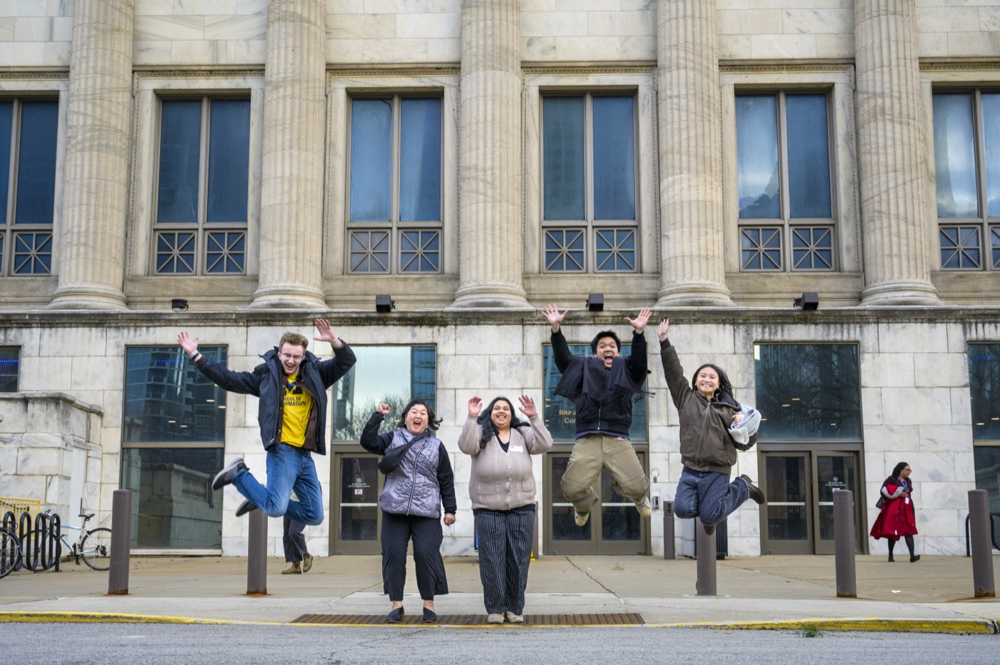

Master the art of adaptive project management,
human-centered fieldwork, and constructive feedback as
you execute your project in real time.
The active phase of an engaged learning experience is
where much of the real growth happens. Requirements may
shift, team dynamics may evolve, client constraints may
emerge, and research may reveal information that changes
your understanding of the problem.
Use this phase to build resilience, adaptability, and
ethical agility while continuing to work collaboratively
with your partner.
Real-world projects rarely follow a perfect plan. As your
team begins working, you may discover new information,
encounter unexpected constraints, or receive feedback
that changes your original direction.
These challenges are part of engaged learning. Rather
than treating change as a failure, use it as an
opportunity to learn more about the project, your partner,
your team, and your own approach to problem-solving.
The goal is not simply to complete your original plan.
Your team should continually evaluate whether your work
is still aligned with partner needs and the goals of the
project.
Phase 3: Managing & Executing in the Field
Real-world projects change. Stay adaptable.
During the experience, your team moves from initial
planning into active project work. This phase includes
conducting research, tracking progress, maintaining
communication with project sponsors, and responding to
feedback.
Continue to balance project goals with the needs and
perspectives of the people and organizations involved.
Human-centered work requires attention to context,
relationships, and the experiences of others.
What to Focus On

Fieldwork & Research Methods
Use human-centered design and research tools to
observe contexts, understand experiences, and extract
meaningful insights from your fieldwork.
Pay attention to what people do, how environments
shape behavior, and what you learn through observation
and interaction.

Sponsor & Client Updates
Maintain regular communication with project sponsors
and clients. Share progress, identify challenges,
communicate changes, and make sure the partner
understands where the project stands.

Feedback Loops
Gather, evaluate, and integrate constructive feedback
throughout the project rather than waiting until the
very end.
Feedback can help your team identify problems, test
assumptions, and make better decisions as the project
develops.
Be Ready to Adapt
Your initial project plan is a starting point, not a
guarantee that everything will happen exactly as expected.
Engaged learning projects can change as your team learns
more.
Changes you may encounter include:
A partner's priorities may change.
Your team may discover new information through
research.
A technical approach may not work as expected.
Project timelines may change.
Team responsibilities may need to be adjusted.
New constraints may affect what can realistically
be completed.
Feedback may require your team to reconsider an
earlier decision.
When changes occur, return to the project's goals and
communicate with your partner before making major
decisions.
Manage Scope and Changing Needs
Scope creep occurs when additional work or expectations
are added to a project without a corresponding adjustment
to time, resources, or priorities.
Not every new request is inappropriate. Some changes may
reveal that the original plan did not fully address the
partner's needs. The important thing is to discuss changes
openly and determine what is realistic.
When the project changes, ask:
What has changed?
Why is the change important?
How does it affect the original project goals?
How much additional time or effort would it require?
What would need to be removed or changed to make
room for the new request?
Does the team and partner agree on the revised
priorities?
Conduct Human-Centered Fieldwork
Fieldwork gives your team an opportunity to better
understand the people, environments, activities, and
interactions connected to your project.
Instead of focusing only on what you expect to find,
remain open to observations that challenge your initial
assumptions.
During fieldwork, consider:
What activities are taking place?
What environments shape the experience?
What interactions are important?
What objects or tools are being used?
Who is involved?
What patterns or unexpected behaviors are you
noticing?
What questions do your observations raise?
Keep Your Partner Updated
Regular project updates help partners understand what
your team is doing and provide opportunities to identify
problems early.
Do not wait until the project is finished to communicate
important changes or concerns. Transparent communication
can make it easier to adjust plans together.
A useful project update can include:
What your team completed since the last update.
What your team is currently working on.
Important findings or insights.
Challenges or barriers.
Decisions that need partner input.
Upcoming milestones and deadlines.
Any changes to project scope or priorities.
Create Feedback Loops
Feedback is most useful when it becomes part of an
ongoing process rather than a final evaluation.
Ask for feedback at meaningful points in the project,
listen carefully to the response, and determine how the
feedback should influence your next steps.
A simple feedback cycle:
Ask.
Identify what you need feedback on.
Listen.
Give your partner, teammates, or other stakeholders
space to explain their perspective.
Evaluate.
Consider what the feedback means for your project
goals and assumptions.
Integrate.
Decide what changes should be made.
Communicate.
Explain important decisions and next steps.
Practice Ethical Engagement
Challenges during an engaged learning project are not
only technical. Your team may encounter ethical questions
about research, communication, decision-making, community
impact, or the way project outcomes are used.
When difficult situations arise, slow down and consider
who may be affected by your decisions. Return to the
project's goals, listen to the people involved, and
communicate openly about concerns.
Ask yourself:
Who could be affected by this decision?
Whose perspective might be missing?
Are we making assumptions?
Have we communicated clearly with our partner?
Does this decision support a respectful and
mutually beneficial partnership?
Navigate Team Challenges
Team dynamics can change as the project becomes more
demanding. Different working styles, responsibilities,
deadlines, and opinions can create challenges.
Address problems early rather than allowing frustration
to build. Clear communication about responsibilities and
expectations can help your team remain focused on the
project's goals.
Discuss problems openly and respectfully.
Clarify responsibilities when work is unclear.
Make space for different perspectives.
Revisit deadlines and priorities when circumstances
change.
Ask for support when your team needs it.
During Your Experience: Resources
These ELO resources can help your team conduct fieldwork,
understand user needs, communicate progress, manage
projects, and work through challenges.
HFLI - AEIOU Worksheet
Use this worksheet to categorize field observations
across Activities, Environments, Observations,
Interactions, Objects, and Users.
HFLI User-Needs-Insights Worksheet
Use observations and interview information to develop
actionable insights about user needs.
HFLI Feedback Worksheet
Support midpoint feedback cycles between students,
instructors, and project partners.
Ginsberg Center - Community Engagement Cases Handout
Explore scenarios involving ethical dilemmas and
strategies for working through challenging community
engagement situations.
Use a high-level status dashboard to keep clients and
project sponsors informed about project progress.
Student Project Communications Plan Example &
Template
Plan meeting cadence, communication channels, and
response windows for your project.
Project Management Worksheet
Break project goals into milestones and task
assignments while keeping track of progress and
responsibilities.
Mid-Project Check-In
Take a moment to evaluate how your project is progressing.
Are we still aligned with the project's goals?
Does our partner understand our current progress?
Have we discovered anything that changes our
understanding of the problem?
Are our current priorities realistic?
Are team responsibilities clear?
Have we incorporated useful feedback?
Are there ethical concerns we need to address?
What should we change before moving forward?
Preparing to Wrap Up

Keep partners informed as the work evolves.
As your project approaches completion, begin thinking
about more than simply finishing the final deliverable.
Consider how your work will be transitioned to your
partner, how you will evaluate your impact, and what you
learned from the experience.
A responsible ending starts before the final deadline.
Begin organizing project materials, documenting important
decisions, and discussing next steps with your partner.